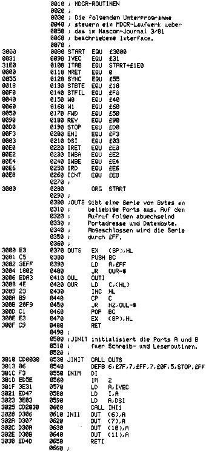

Nascom Journal |
Juli 1981 · Ausgabe 7 |
In einer zurückliegenden Ausgabe des NJ versprach ich, mehr über die Ansteuerung des MDCR-Laufwerks zu bringen. Dies will ich nun einlösen. Wer das damals beschriebene Interface aufgebaut hat, kann das Laufwerk über Port B der PIO ansteuern. Den 8 Bits von Port B wurde folgende Bedeutung gegeben:
| Bit 0: | Eingang, | Read Clock | ||
| Bit 1: | Eingang, | Read Data | ||
| Bit 2: | Eingang, | Begin/End of tape | ||
| Bit 3: | Eingang, | Cassette in position | ||
| Bit 4: | Ausgang, | Write Command | ||
| Bit 5: | Ausgang, | Write Data | ||
| Bit 6: | Ausgang, | Move reverse | ||
| Bit 7: | Ausgang, | Move forward |
Weiterhin von Bedeutung ist noch Bit 7 von Port 0, über das das Write enable-Signal abgefragt werden kann. Am Strobe-Eingang von Port A liegt das 12kHz-Signal, so daß Port A – richtig programmiert – alle 83 usec einen Interrupt anfordern kann. Soviel zur Hardware.
Da das Interface bereits eine automatische Bandendabschaltung enthält, können Sie den MDCR durch einen Softwarefehler nicht kaputtmachen. Nur auf einen Punkt müssen Sie achten: Die Bits 0-3 von Port B dürfen nicht als Ausgang programmiert werden. Andernfalls werden Sie erleben, wie Ihre PIO unter Schall- und Rauchentwicklung in die ewigen Jagdgründe entschwindet.
Zur Software: Das angekündigte MDCR-Bedienprogramm ist fertig. Es wird auf Ihrem Nascom allerdings noch nicht laufen, da ich meinen auf 64 Zeichen/Zeile umgebaut habe und das Programm dafür ausgelegt ist. Ich muß es also mit neuen I/O-Routinen versehen, was noch einige Wochen dauern wird (ich habe momentan sehr viel zu tun). Die endgültige Version wird 2KByte umfassen, einen Floppy-ähnlichen Bedienkomfort bieten (File-Struktur, Bootstrap-Möglichkeit) und auch durch Basic ansteuerbar sein. Mehr darüber (hoffentlich) in der nächsten Ausgabe.
Doch nun zum eigentlichen Kern des Programms, den Schreib-Lese-Routinen, die ich Ihnen nicht solange vorenthalten möchte. Die wichtigsten Unterprogramme sind im folgenden aufgelistet. Damit können Sie sich problemlos ein eigenes Bedienprogramm zusammenbauen.
Noch ein Tip, falls Sie nun Ihre eigenen Schreib- und Lese-programme entwickeln wollen: Die Firma Philips gibt in ihrem MDCR-Manual auf Seite 10 bestimmte Vorschriften für das Timing vor und nach Lese- und Schreiboperationen an. Diese Vorschriften sind tatsächlich ernst zu nehmen- meine ersten Leseprogramme liefen nicht richtig, weil ich nach dem Motto „Ein paar Millisekunden weniger werden schon nichts ausmachen“ noch ein paar Blöcke mehr aufs Band quetschen wollte. Also: Die angegebenen Zeiten dürfen Sie ruhig überschreiten, aber beim Unterschreiten gibt’s Probleme.

| Seite 14 von 20 |
|---|